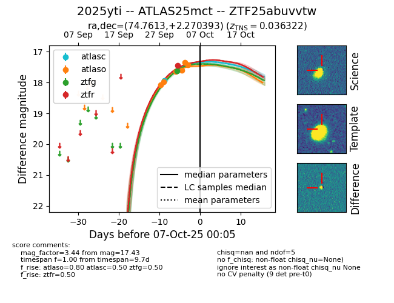
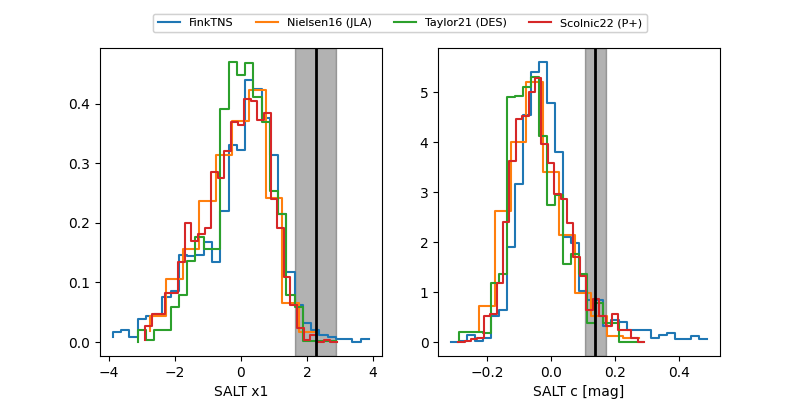

FINK: ZTF25abuvvtw
Lasair: ZTF25abuvvtw
ALeRCE: ZTF25abuvvtw
TNS: 2025yti
YSE: 2025yti
ZTF25abuvvtw (ztf,fink)
2025yti (tns,yse)
ATLAS25mct (atlas)
equatorial (ra, dec) = (74.7613,+2.27039)
galactic (l, b) = (197.1064,-23.62679)


last atlasc=17.94, atlaso=17.43, ztfg=17.62, ztfr=17.46
1 atlasc, 6 atlaso, 1 ztfg, 1 ztfr detections